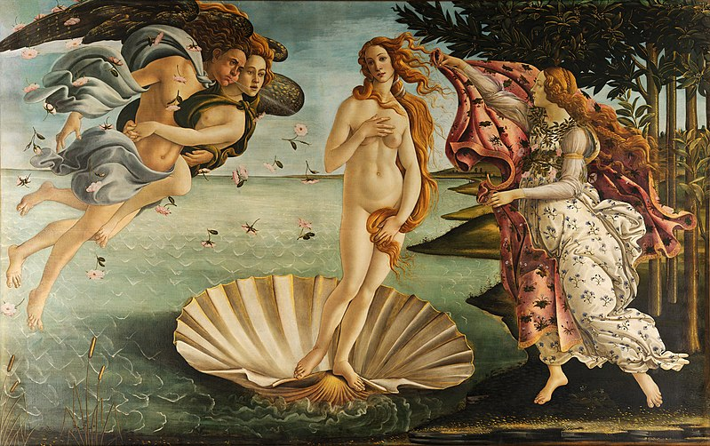

Відро́дження, або Ренеса́нс (фр. Renaissance — «Відродження») — культурно-філософський рух кінця Середньовіччя — початку Нового часу, що ґрунтувався на ідеалах гуманізму та орієнтувався на спадщину античності.
Сучасні дослідники виділяють п'ять періодів доби Відродження:
Протовідродження (Передвідродження) (2-а половина XIII століття — XIV століття);
Раннє Відродження (1410/1425 рр. XV ст. — кінець XV століття);
Високе Відродження (кінець XV — перші 20 років XVI століття);
Пізнє Відродження (середина XVI — 90-ті роки XVI століття), співіснування з маньєризмом. В архітектурі — виникнення палладіанства;
Північне Відродження — XVI століття, співіснування з північним і італійським маньєризмом.
